Main Menu and Toolbars¶
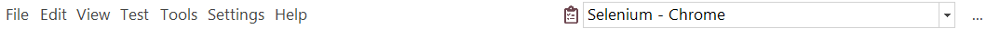
File¶
Default:

Manual:
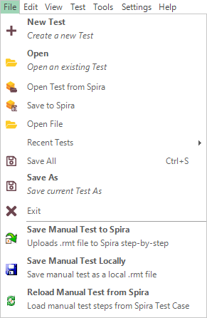
The File menu provides quick access to all the File management functions in Rapise. Many of these are also available on the main toolbar.
- New Test - creates a new Rapise test, it can be saved either to Spira or locally.
- Open - opens an existing test (
.sstest) that is already available locally. - Open Test from Spira - opens a test from SpiraTest test management repository and downloads to the local repository
- Save to Spira - saves the current test to the Spira test management system so that it updates the version in your Spira test management repository
- Open File - opens a single file and shows it in editor. File is not added to the current test project.
- Recent Tests - open one of recently used tests projects
- Save All (Shortcut: CTRL+S) - saves the current test project and all open documents locally. To save to a different location, use the Save As option in the
File > Save As. - Save As - creates a new, differently named copy of the test project and all files explicitly included into it.
- Exit - exits Rapise.
- Save Manual Test to Spira
- Manual: Upload all modified steps to the Spira Test Case.
- Save Manual Test Locally
- Manual: Save manual Test Case Steps as a local .rmt file.
- Reload Manual Test from Spira
- Manual: Reload test steps from the Spira Test Case overriding local changes.
Edit¶
The Edit menu provides tools for editing currently open script file. Menu contents depend on the active editor currently open in the content view.
Default:

JavaScript:
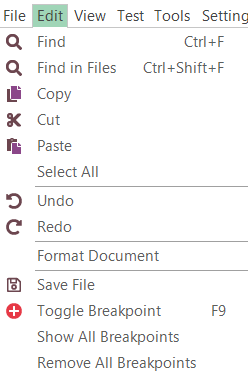
RVL:
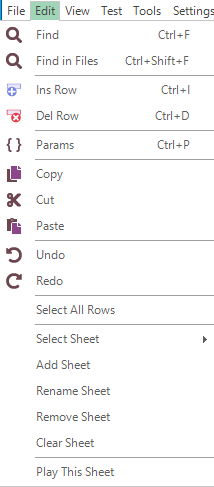
Manual:
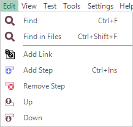
- Find, Find in Files - search using the Find and Replace Dialog.
- Ins Row (Shortcut: Ctrl+I)
- RVL: Insert RVL Row before active.
- Del Row (Shortcut: Ctrl+D)
- RVL: Delete active Row. If several rows selected then all of them are deleted.
- Params (Shortcut: Ctrl+P)
- RVL: Show all parameters (including optional) for the currently edited action.
- Add Link
- Manual: Insert link to other Manual step
- Add Step (Shortcut: CTRL+Ins)
- Manual: Append new manual step to the end
- Remove Step
- Manual: Delete selected step.
- Up
- Manual: Move selected step Up.
- Down
- Manual: Move selected step Down.
- Select All
- JavaScript: select all text in the text editor.
- Copy (Shortcut: CTRL+C)
- JavaScript: copies whatever text you have highlighted to the clipboard.
- RVL: copy selected Rows or Cells
- Cut (Shortcut: CTRL+X)
- JavaScript: erases whatever text you have highlighted, and copies it to the clipboard.
- RVL: copy rows to the Clipboard
- Paste (Shortcut: CTRL+V)
- JavaScript: pastes from the clipboard.
- RVL: paste cells form the clipboard.
- Undo (CTRL+Z) reverses the last deletion or insertion made.
- Redo button (CTRL+Y) reverses the last undo action.
- Toggle Breakpoint (Shortcut: F9) inserts or removes a breakpoint at the current cursor position.
- Save File
- JavaScript: saves the script file you are editing.
View¶
The View menu contents depend on the active editor currently open in the content view.
Default:

Manual:

- Start Page - opens the Rapise Start Page.
- Spira Dashboard - opens Spira Dashboard.
- RVL - opens the RVL editor.
- Main - opens the primary test script file (normally
Main.js). - User - This opens the user functions script file containing any user-defined testing functions (called
User.js). -
Show
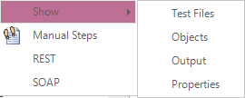
- View > Show > Test Files - show and highlight Test files view
- View > Show > Objects - show and highlight Objects repository tree.
- View > Show > Output - show and highlight output view.
- View > Show > Properties - show and highlight properties view
-
Manual Steps - open manual test steps for given step (if any). If no manual steps defined yet, create new.
- REST - find and open SOAP definition file in the content view. If no
.soapfile is yet defined, nothing happens. - SOAP - find and open REST definition file in the content view. If no
.restfile is yet defined, nothing happens. - View Manual Test in Spira
- Manual: Open current test in Spira web interface. Don't forget to do
File > Save to Spiraif you did any changes to manual steps locally.
- Manual: Open current test in Spira web interface. Don't forget to do
Test¶
The Test menu contents depend on the active editor currently open in the content view.
Default:

Manual:

- Play - this item executes the current test.
-
Record - this item is used for recording and learning, clicking it will open the Recording Activity Dialog.
Note there are some additional options available when using the Record button:
- Record - clicking Record on its own will start Rapise recording using the currently selected libraries (this is the default action).
- Shift+Record - This brings up the library selector (shown above), and is equivalent to clicking the [] libraries button in the ribbon before starting recording.
- Ctrl+Record - This brings up the application selector (see below) and lets you change the application and library being recorded.
-
Test Settings - display test settings.
- Open Root ...... - Open the root of current test framework in this Rapise window. Only visible then we are in sub-test of any nesting level.
- Open Parent ...... - Open parent test containing this sub-test in this Rapise window. This item is only visible when parent is not yet a framework root (i.e. we have a deeply nested test case).
- Spira Properties - opens the Spira Properties dialog that allows you to see the name of the SpiraTest project and test case that the current Rapise test is linked to.
-
Record Manual
- Manual: start the Select Application to Record dialog box. This dialog box is the same one that you'll use for automated testing, however when you click through the application under test it will record manual test steps instead of automated script code.
-
Execute Manual
- Manual: executes the current manual test. You will be asked to save the test case to Spira, then the latest version from Spira will be downloaded into the Rapise manual test execution wizard so that you can start manual testing.
-
Screenshots
- Manual: option will tell Rapise to capture the current screenshot when performing manual recording and include the screenshot with the recorded test step. These are two sub-options:
- Window
- Manual: when checked, this will record the entire window. Warning, this may take up large amounts of disk space. Otherwise it will record just the object underneath the current cursor.
- Cursor
- Manual: when checked, this will record the location of the mouse pointer/cursor inside the image.
Tools¶
The Tools menu contents depend on the active editor currently open in the content view.
Default:
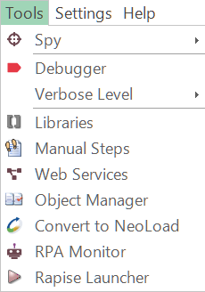
Manual:
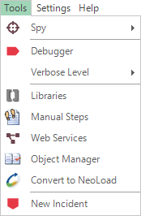
- Spy - dropdown to select active Spy. You use the Spy to look at the running application and find specific objects that you want to perform an operation or verification on.
- Debugger - toggles debugger.
- Verbose Level- drop-down list controls the Verbosity Level.
- Libraries - this button opens the Select an Application Dialog so that you can add/change the libraries being used to record the current test.
- Npm Console - show an
npm consolefor the current testing framework. This way you may quickly install new packages or initialize using existingpackage.json. - Web Services - allows you to add a new web service definition to your Rapise test. Clicking on this displays the Add Web Service dialog box.
- Object Manager - open the Object Manager add-in; this add-in is used to copy recorded objects between test scripts. into a NeoLoad performance test.
- RPA Monitor - open RPA Monitor.
- Rapise Launcher - starts Rapise Launcher.
- New Incident
- Manual: open the Incident Logging dialog box so that you can log a new incident in SpiraTeam.
Settings¶
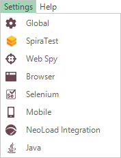
Provides access to all the global settings and options in Rapise. Settings relevant to just the current test are available as Test > Test Settings...
- Global - This brings up the Global Settings dialog that lets you change any of the system-wide settings for Rapise.
- SpiraTest - takes you to a dialog box that lets you change how Rapise is integrated with the SpiraTest test management system. It will let you change the URL, username and password used to connect.
- Web Spy - displays the Web Spy Settings dialog box. This lets you change the settings.
- Browser - displays the Browser Settings dialog box. This lets you edit and select the web browser profile being used for web testing (for non-Selenium browser profiles).
- Selenium - displays the Selenium settings dialog box. This is used to edit the different Selenium web browser profiles that can be used by Rapise. related to using the Web Spy to inspect the DOM objects in web pages.
- Mobile - displays the Mobile Settings dialog box. This lets you configure the different mobile devices that are available for testing by Rapise.
- NeoLoad Integration Settings - displays the NeoLoad Integration Settings dialog. These settings may need to be changed when using Rapise with NeoLoad.
- Java - displays the Install Java Access Bridge dialog box. Installing the Java Access Bridge lets Rapise connect to Java AWT/Swing applications so that they can be tested.
Help¶
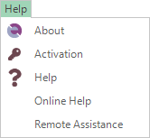
- About - information about the running instance of Rapise, including the version number.
- Activation - opens the Rapise license activation screen. This can be used to deactivate the current license so that it can be used on a different machine.
- Help - provides access to the interactive help system. You can also bring up the help system by pressing F1 on the keyboard.
- Online Help - opens online version of the help system (updated regularly).
- Remote Assistance - launches GoToMeeting session with a given ID.
Read more about Remote Assistance.
Report¶
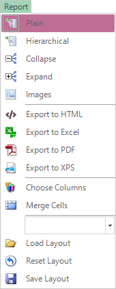
The Report menu is available anytime you have a report (.trp) file visible in the Content View.
- Plain - view test steps, assertions, and messages aligned in a table.
- Hierarchical - switch to hierarchical display to more clearly see what assertions, messages, and data are associated with which test steps.
- Collapse - collapse the report to show only the top level. What is visible will depend on how the report is sorted.
- Expand - expand all report rows.
- Images - toggle between hiding and revealing images.
- Export to HTML - save the report as HTML document.
- Export to Excel - save the report as an Excel file.
- Export to PDF - save the report as an Acrobat PDF file.
- Export to XPS - save the report as XML Paper Specification file.
- Choose Columns - to hide or reveal report columns.
- Merge Cells - merge identical consecutive cells.
- The drop-down combo lets you choose between previously saved layouts. Selected layout is loaded using next item Load Layout.
- Save Layout - press to keep your layout changes after closing Rapise.
- Reset Layout - undo any changes you've made.
See Also:
Debugger¶

The Debugger menu and toolbar is available while the javascript debugger is being used. To use the the Debugger, first enable it by toggling the the corresponding toolbar button:

then Play your script.
- Continue F5 - continue executing the script.
- Step In F11 - step into a function/procedure.
- Step Out Shift+F11 - continue until the current procedure is exited.
- Step Over F10 - go to the next line in the current procedure/function.
- Stop Debugger Shift+F5 - stop executing the script and exit the debugger.
Main Toolbar¶
The Main is the primary toolbar providing tools to help with creating and executing tests. It is always visible:

RVL Toolbar¶
The RVL toolbar is is shown for RVL editor:
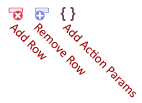
Manual Toolbar¶
The Manual toolbar is shown for manual test editor:

- Select Current Release dropdown list displays the list of releases in the current Spira project. You can then choose the appropriate release that the current test is being executed against.
Report Viewer Toolbar¶
The Report toolbar is shown for report viewer :
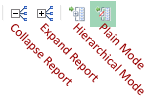
Debugger Toolbar¶
The Report toolbar is shown while JavaScript debug session is active. It is a set of shortcuts for debugger menu: